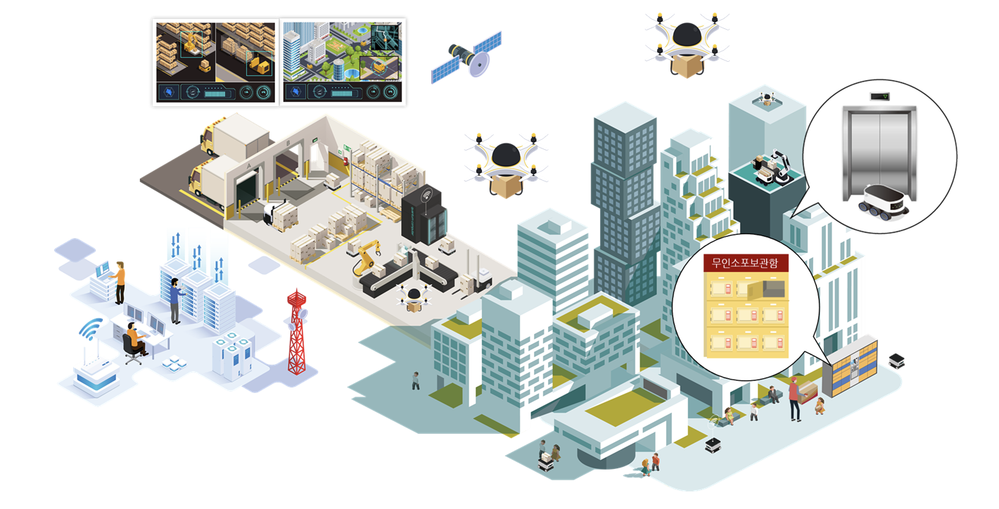
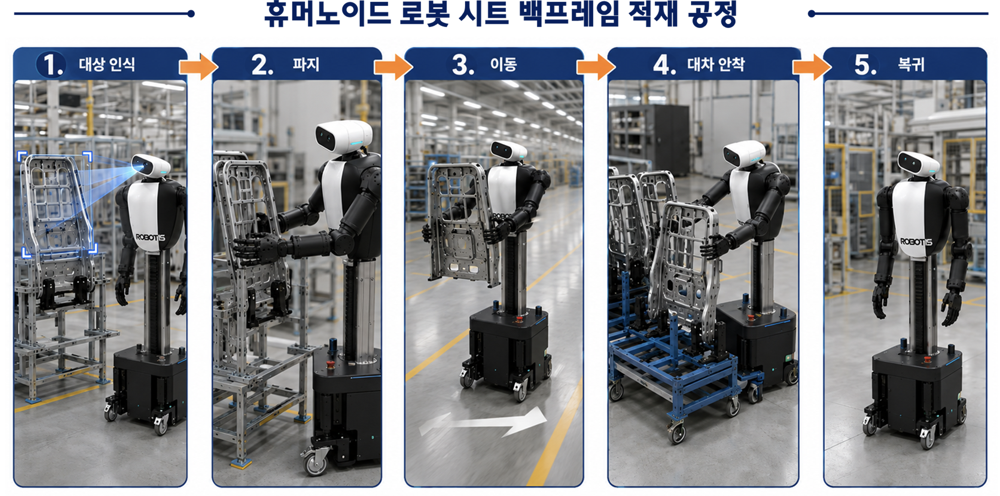

Projects
Active Research Projects

Software Development and Verification for an Onboard Surveillance Information Acquisition and Fusion System
This project aims to develop an onboard surveillance information acquisition and fusion system that can operate in environments with multiple heterogeneous UAM and aerial platforms, along with a multi-aircraft simulation environment for verification. The project focuses on algorithms and AI for integrated acquisition, processing, and fusion of cooperative and non-cooperative surveillance information, while validating real-time performance, accuracy, and stability in multi-object scenarios. It also implements a modular software architecture suitable for onboard deployment, establishing a technical foundation for future expansion and demonstration environments integrated with 5G communication modules.

Autonomous Navigation and Control for Advanced Air Mobility Systems
This project focuses on developing learning-based navigation and control algorithms for advanced air mobility (AAM) platforms, including eVTOLs and defense UAVs. We design robust autonomy stacks capable of operating in complex, dynamic environments, integrating deep reinforcement learning, multi-modal state estimation, and adaptive control for next-generation defense aerial systems.

로봇 원격제어 기능 및 로봇 탑승용 승강기 시스템 기능 개발
This project focuses on developing remote control capabilities for robots and elevator system functions designed for robot boarding. The research targets seamless robot navigation across multi-floor environments by enabling reliable tele-operation interfaces and robot-elevator interaction protocols, contributing to the deployment of autonomous service robots in real building infrastructures.

국산 휴머노이드로봇 기반 자동차 부품 제조 공정 실증 및 공정 특화 행동모델 개발
This project aims to demonstrate automotive parts manufacturing processes using domestically developed humanoid robots and to develop process-specific behavior models tailored to real-world factory environments. The research focuses on enabling humanoid platforms to perform complex manipulation tasks in structured industrial settings, bridging the gap between robot capability and practical deployment in Korean defense and automotive manufacturing sectors.
Education Programs

Defense AI Bootcamp Program
This program, funded by the Ministry of Education and KIAT, aims to cultivate field-ready talent for advanced defense industries through practical education in defense AI, defense management and logistics, MRO/AX, and cybersecurity. As a specialized bootcamp in the advanced industry sector, the program focuses on defense AI as its core domain and trains students across key subfields required for the digital transformation of the defense industry.
Ongoing Research Directions
Our lab is actively pursuing various government and defense research proposals, striving to secure next-generation autonomous and robotic defense technologies.